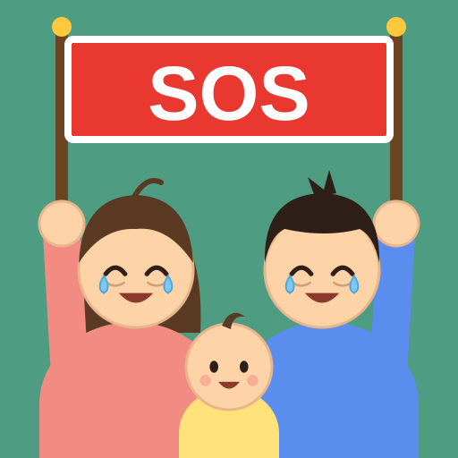

공동육아 SOS 🆘
오늘도 독박으로 힘든 누군가의 SOS,
용기 낸 한 명이 모임으로 구출합니다 💪
📲 홈 화면에 앱으로 설치하기
설치하면 홈 화면에 SOS 깃발 든 가족
아이콘이 생겨서 앱처럼 바로 열려요.
💡 웹앱이 뭐예요? 다운로드 아니에요!
이 웹사이트를
홈 화면에 바로가기로 추가하는 거예요.
컴퓨터 바탕화면 바로가기와 같아요.
- 앱스토어에서 받지 않아요
- 용량도 거의 차지하지 않아요
- 필요 없으면 아이콘만 지우면 끝이에요
🤖 안드로이드 (크롬)
- 크롬으로 이 사이트를 열어요.
- 오른쪽 위 ⋮ (점 세 개)를 눌러요.
- 홈 화면에 추가 또는 앱 설치를 눌러요.
- 설치를 누르면 끝! 홈 화면에 공동육아 SOS 아이콘이 생겨요.
🍎 아이폰 (사파리)
- 사파리로 이 사이트를 열어요.
- 아래쪽 가운데 공유 버튼 (⬆︎ 네모에 화살표)을 눌러요.
- 목록을 아래로 내려 홈 화면에 추가를 눌러요.
- 오른쪽 위 추가를 누르면 끝! 홈 화면에 공동육아 SOS 아이콘이 생겨요.
아이폰은 설치한 앱을 처음 열 때 방을 한 번 더 물어봐요. 🔗 초대 링크를 받았어요에 링크를 붙여넣고 비밀번호를 넣어 주세요.
카카오톡에서 링크를 누르면
안드로이드는 크롬, 아이폰은 사파리로 열려요.